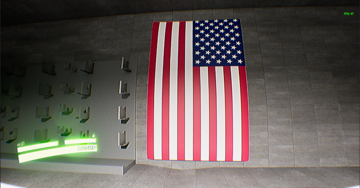
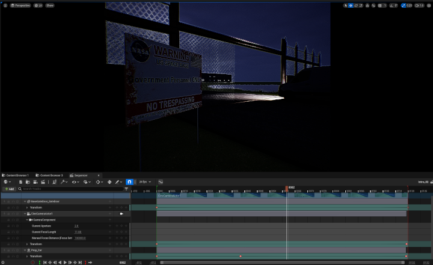

DEVLOG
Here I summarize all the key achievements for a specific month of development.
APRIL 2024
- Created a minigame task and a framework for future ones
- Created the general idea for the game
- Made both the 1st, and 2nd build of the game.
- Refined the in-game menus

MAY 2024
- Refined the moon base map
- Added the framework for FPS gameplay
- Made a custom VHS styled shader for the game.
- Made the player HUD 3D
- Refined the in-game menus
- Made the 3rd build of the game. 
JUNE 2024
- Added a launch sequence intro mission, which is likely to be unused as of writing this.
- Made the first FPS animations
- Refined the in-game menus
- Made the 4th build of the game.

JULY 2024
- Tied weapon attributes such as weapon spread, accuracy, and range to the players current combat level. This includes a leveling system with different sublevels.
- Added a relatively in-depth space combat system for the "Interception" core gamemode.
- Created a basic inventory and armor mechanic.
- Heavily refined the Houston Launchsite Map, that is now likely to be unused as of writing this.
- Added a variety of special weapons, like grenades and throwing knives.
- Created a few cutscenes and lore tapes.
- Reverted all UI elements back to a flat, 2D HUD
- Created the 5th Build of the game.
- Refined the in-game menus 
AUGUST 2024
- Added basic ground troop soldier AI features such as patrolling and shooting
- Created a dynamic armor system where the player has a plate of armor per body region. If any damage is taken in that area after the plate breaks, damage will be applied to their actual health. Amount of damage is also applied according to the body segment damaged.
- Added the framework for 3 player classes. (Assassin, Commando, Cybersoldier). Framework as in modified attributes and stats.
- Added a TON of detail to the GDD, which has reached a peak of over 4,000 words. Actual story and lore are now beginning to take shape, as well as a much larger scope for the game.
- Refined the in game-menus

SEPTEMBER 2024
- Made this website (instead of working on the game ik)
- Added a fully functioning save/load system, along with the ability to create different save slots.
- Added 3 Cybersoldier Hacks. This is a special mechanic unique to the Cybersoldier class.
- Added 2 new types of enemy spacecraft, along with adding 4 types of Starship upgrades that consists of new mechanics and weapons, along with a solid progression system.
- Started work on a new map that will be designed specifically for the new scope of the game. It's located on the frozen polar ice caps of Mars, where a Soviet laboratory is suspected of doing experiments on frozen alien lifeforms. Most of the map will be designed using modular parts.
- Continued to polish the FPS gameplay
- Refined the in game-menus

OCTOBER 2024
- Added a cool warping sequence that teleports you to the target planet or moon.
- Added a 3D interactive landing menu
- Added realistic atmospheres to the appropriate planetary bodies
- Started work on the Basic Training level (The Tutorial).
- Reworked the way missions are handled.
- Replaced the stylized, computer interface user interface with a more futuristic, sci-fi UI.
- Added semi-smart NPC's with their own dialog, backstory, and ranking.
- Continued to work on this website a little bit

NOVEMBER 2024
- Created a playable, working prototype of a tutorial, with smart NPCs that teach the player the basics of my game.
- Replaced the mixamo skeletal mesh of the NPCs to an actual modern astronaut mesh.
- Replaced the old astronaut arms with way better ones
- Added the 357 Magnum Weapon (fully works, fully custom animated, etc.)
- Added a compass to the HUD
- Continued to update a lot of the hud elements
- Updated the overall look of this website, to better match the new UI style of the game.
- Created the 6th build of the game
- Added the setup screen, where the player customizes their personal AI, and sets some basic settings.
- Made the orbiting menu more realistic by adding a static sun, dynamic sunlight intensity/sizes, and a new Earth texture that better fits the story of the game.

DECEMBER 2024
- Tweaked some of the post processing effects a bit
- Added pedestrian NPCs that crowd different environments. These NPCs have randomized Metahuman faces.
- Added the framework for a leveling system to each separate weapon
- Started work on a abandoned Russian City map, with an exploration mission giving the player the freedom to explore to their liking.
- Added dynamic sounds to shooting and walking on different materials.
- Completely revamped the Jetpack system, replacing the overheating bar with multiple Jetpack uses. The jetpack in general is also way better, more fun, and viable to use.
- Added a new exoplanet, Proteus. It's a water world, and the first exoplanet discovered by humanity.
- Completely remade the Starship movement, it now feels more grounded, feeling more like a jet than a rocket.

JANUARY 2025
- Continued to work on the abandoned Russian City Map (adding new meshes, flags, extra details, etc)
- Developed the 7th build of the game, and ran the game's first proper play test, which taught me many things that needed to be prioritized, like proper optimization.
- Created the Basic AI States for the Watchdog Spider-bot enemy
- Created a foundation for easily creating multiple new ships.
- Added the CT-Night Eagle ship
- Remade the Starship HUD UI